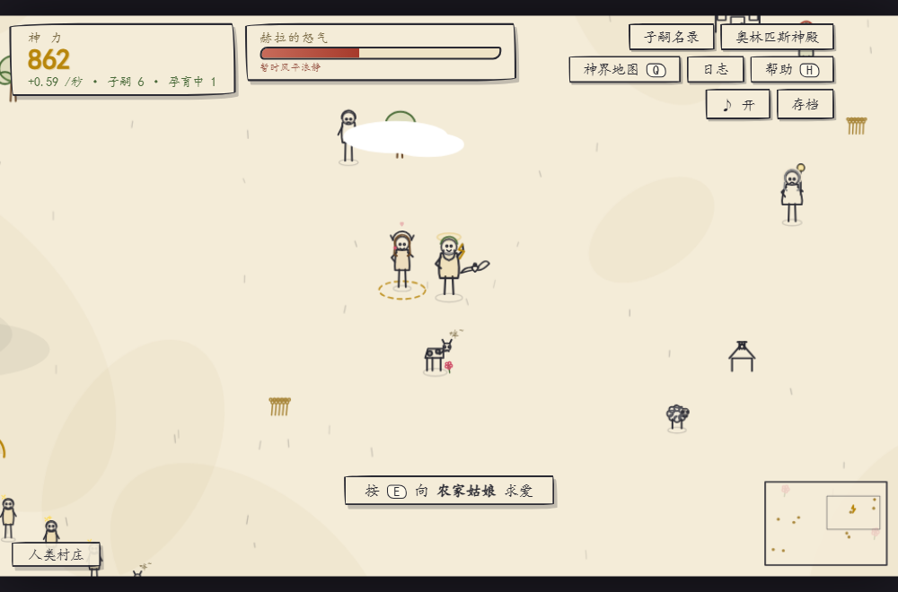
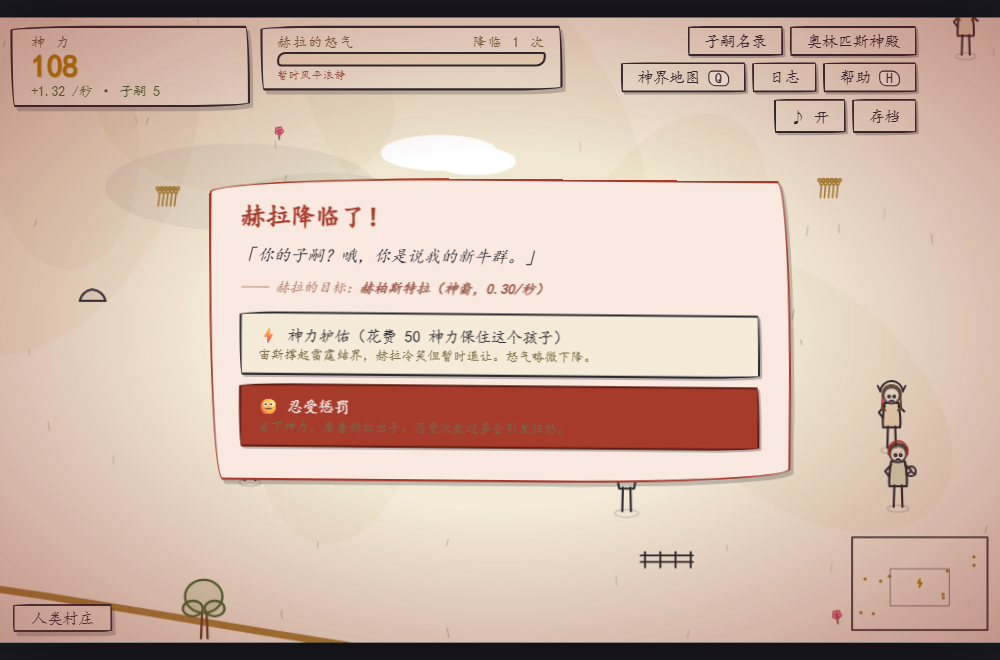
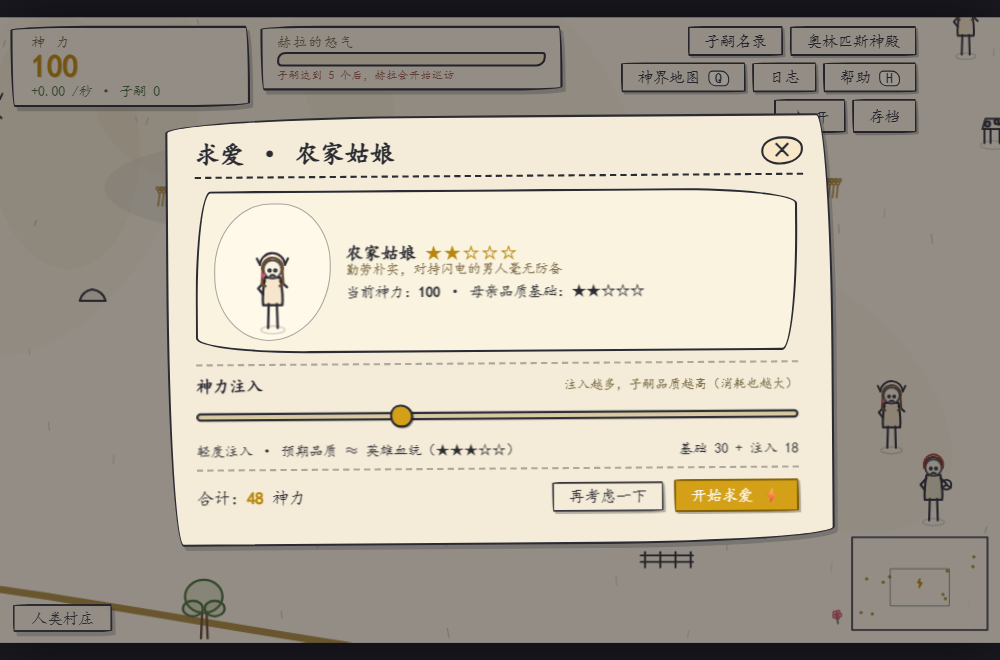
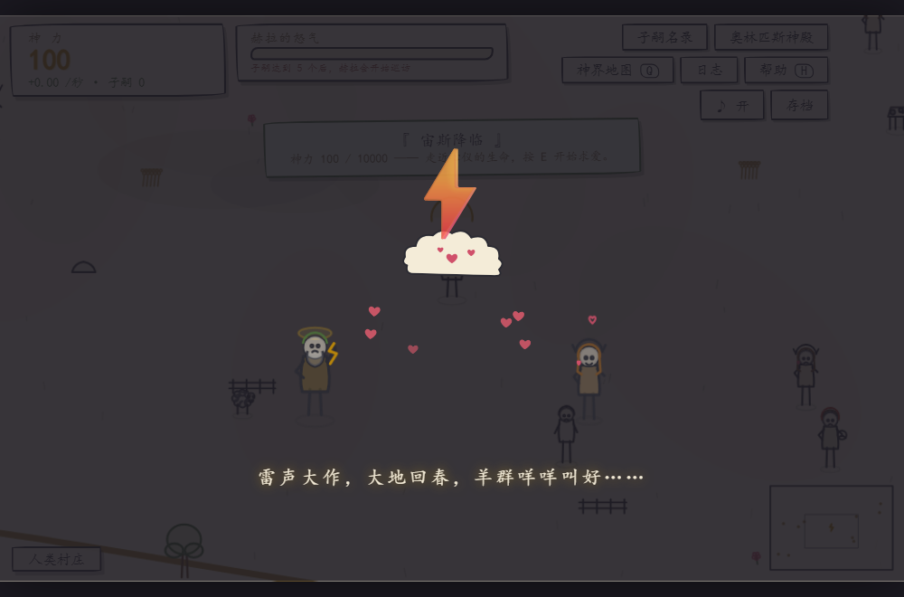

你是宙斯，从 100 点神力起步。游走五片大陆——人类村庄、精灵森林、碧海深渊、神话火山、冥界边境， 与农家姑娘、树精灵、美人鱼、塞壬、凤凰乃至复仇女神结缘。子嗣越多，神力越盛； 攒满 10000 神力，登神成为众神之父。
但赫拉的目光从未离开。孔雀出现在地图上时，最好开始攒护佑金——毕竟你的孩子可能下一秒就变成牛（哞）。

手绘线条风 · 2.5D 大陆
赫拉降临：护佑还是忍受？
神力注入决定子嗣品质
含蓄搞笑的结缘演出《宙斯成神之路》从一句游戏点子到完整成品——玩法设计、数值模拟验证、 全部代码（7 个模块、3000+ 行）、20 多种手绘角色、25 个随机事件文案、自动测试与截图验证—— 均由 千问办公（QwenWork） AI 桌面助手完成。
如果你也有一个想做的小游戏、小工具、小网站——把想法告诉千问办公就行。 它还能帮你把作品发布成开源项目、生成宣传页、一步上传 GitHub。
千问办公 · 让每个灵感都能落地